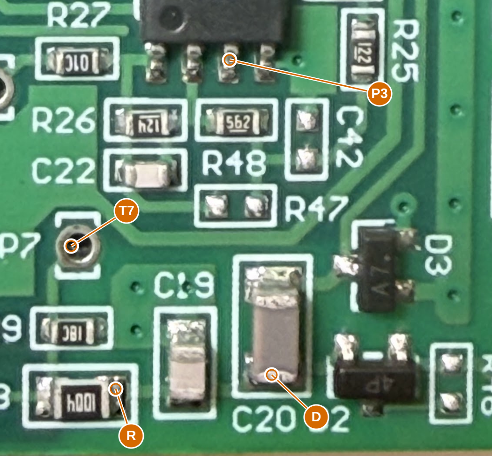

v0.9.46 | In-circuit batch completed; no active measurement form
No new readings requested. The completed tests requested battery/programmer disconnected and all components fitted.
Completed E11 results: C20 lower to U3 pin 3 = 1.023 Mohm, to TP7 = 998 kohm, and to R28 right = 1.5 ohm. The confirmed D2/C20/R28 group is now separate from U3.3. No new readings requested for this correction.
Completed results shown below; no active bench request.
R28 remains the original 1 Mohm part; high-resistance paths are not treated as copper.
Scope work and component lifting remain deferred.
Completed receiver-input checks: C20, U3 pin 3, TP7 and R28

D: C20 lower metal end nearest printed C20; model C20.2
P3: U3 pin 3, third lower lead from the pin-1 dot end
T7: TP7 hole above R28/R29; already connected to PIC RA1 and R28 model1
R: R28 right metal end nearest C19; model R28.2
ID
Tip 1
Tip 2
Condition
Reading
E11-R1
D
P3
Unpowered resistance requested; components fitted; lead baseline/stability not supplied
1.023 Mohm
E11-R2
D
T7
Unpowered resistance requested; components fitted; lead baseline/stability not supplied
998 kohm
E11-R3
D
R
Unpowered resistance requested; components fitted; lead baseline/stability not supplied
1.5 ohm
The frequency dependence and unspecified equivalent mode prevent treating these as isolated nominal values. The capacitor review separates reference-based replacement choices, conditional candidates and unresolved RF/filter parameters.
Nothing is sent automatically. Copy and paste into the chat, or download a text file.
What follows
Audit connection evidence and device qualifications - R39 and receiver-input split are corrected. E11 retains specific upper-capacitor/input and other copper-evidence gaps; no new bench batch.
Recover critical component values - All 44 unknown ceramics have numerical design candidates, ratings and dielectrics: 12 supply, 17 signal/timing and 15 RF-bank seeds. Validation remains; no broad measurement batch is active.
Finish interface and package mapping - LED colour branches and J5 board-contact/output mapping are established. LED footprint, connector fit and external motor harness orientation remain reproduction qualifications.
ERC: 1 retained U6/U6A output conflict. U6A is DNP; its regulator symbol remains by your request. Other source and library findings are resolved.